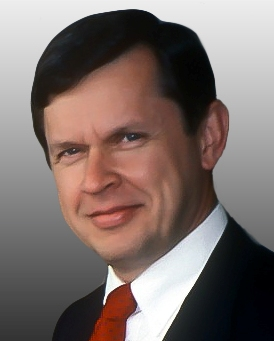

(Augest 9, 1941)
Alfred Aho's numerous algorithms and data structures papers and books, programming languages, compilers and computer science foundations are renowned for his work. He is the "A" in AWK, a commonly used language for text processing, and wrote the first versions of the Unix paradigm matching egrep and fgrep utilities. He is interested in programming, compiling and quantum computing as well as in his latest research interests. Aho served as Chairman of the NAE's Computer Science and Engineering Section, ACM's Special Interest Group on Algorithms and Computer Philosophy and the NSF Computing and Engineering Advisory Committee. He was the theory of the ACM Journal computational field theory and currently edits the contributed section on ACM Communications.
Alfred Aho's many contributions to computer science as a researcher, manager and lecturer show an elegant blend between theory and procedure. His pioneering works in formal languages and compilation theory also helped to establish key algorithms for modern compilers and corresponding approaches. They are used to construct many programming languages in compilers widely used, for example YACC and LEJ. Dr Aho was working at Bell Labs in Murray Hill, N.J. from 1967-1991. During this period, he developed potent algorithms for text processing and translation applications. This idea was inspired by his code generation algorithms of replacement C compilers enabling the transition from minicomputers to UNIX supercomputers. Between 1991 and 1995, he held a lecture in computer sciences at the University of New York Columbia, then served as Bellcore in Murray Hill, NJ. Subsequently, he served as Executive Vice President and Vice President of Computer Research for Lucent Technologies in the Murray Hill, NJ region.
“Perhaps the most important principle for the good algorithm designer is to refuse to be content.”